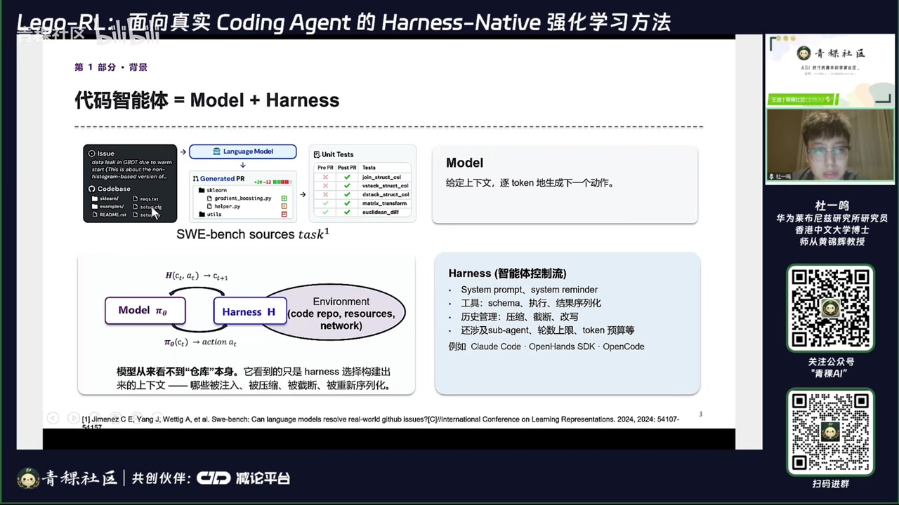
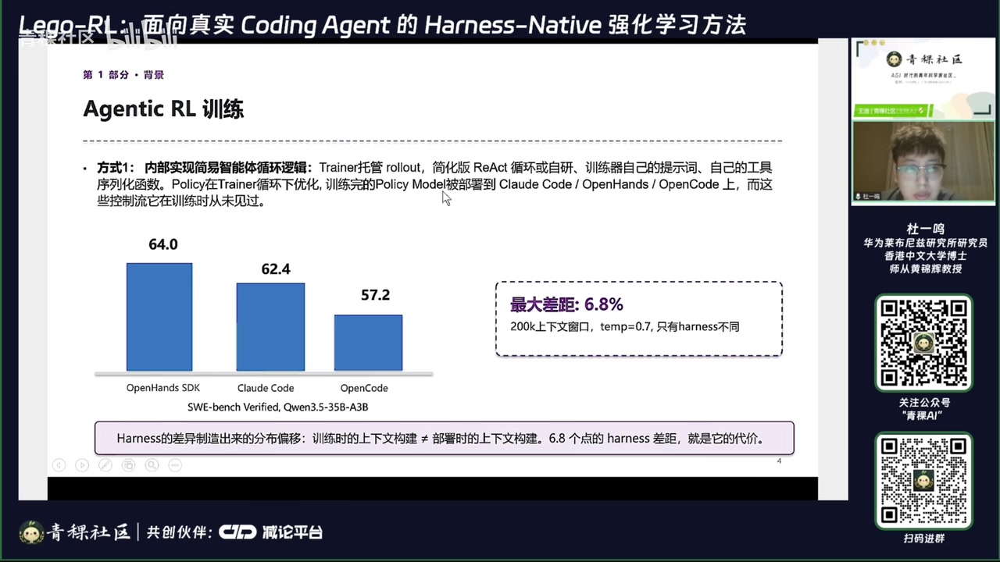
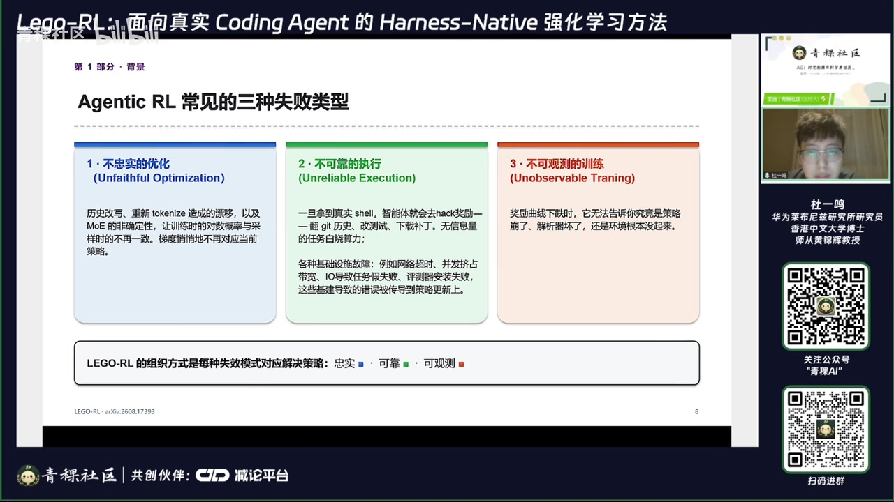
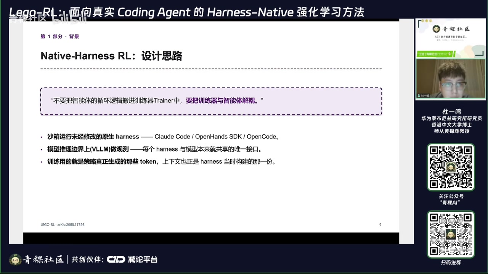
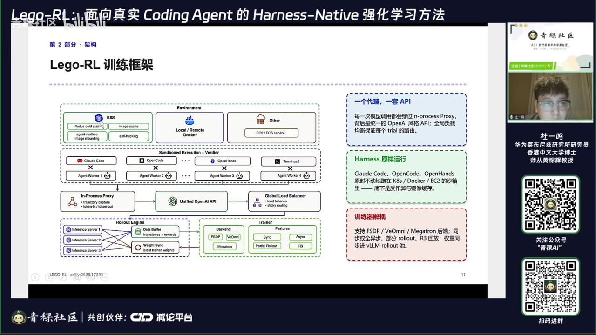
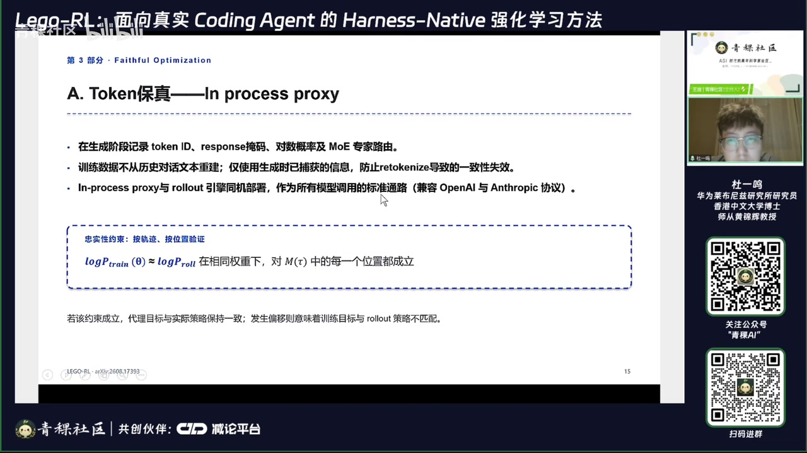
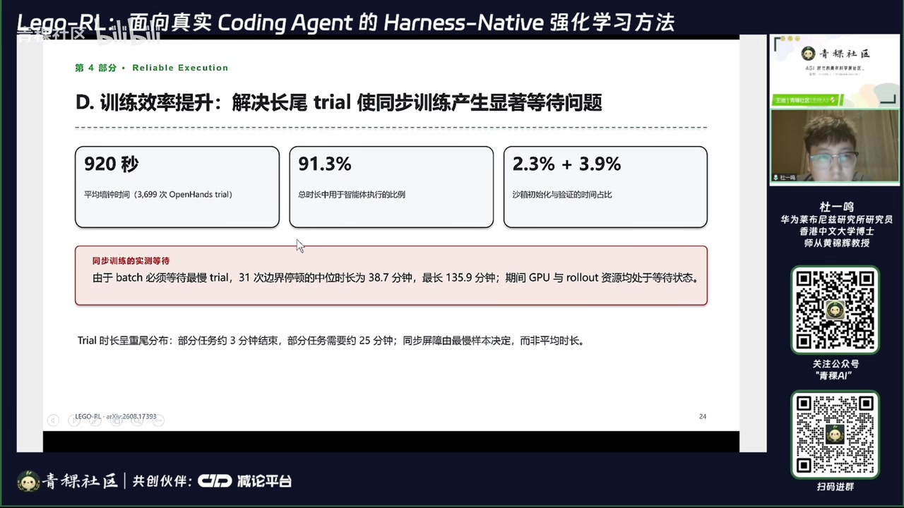
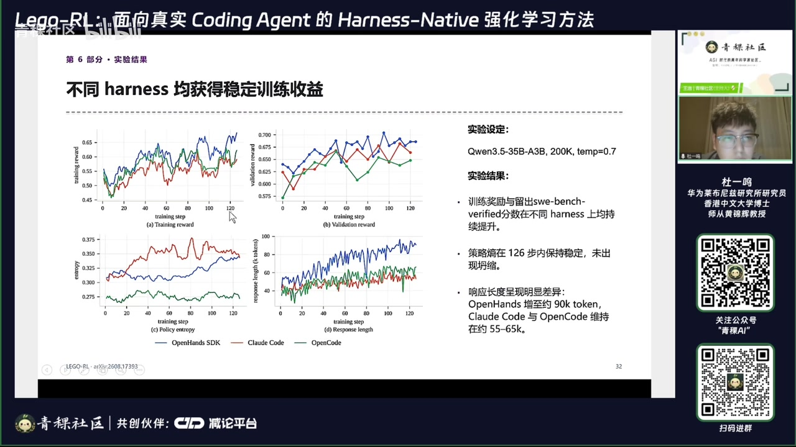
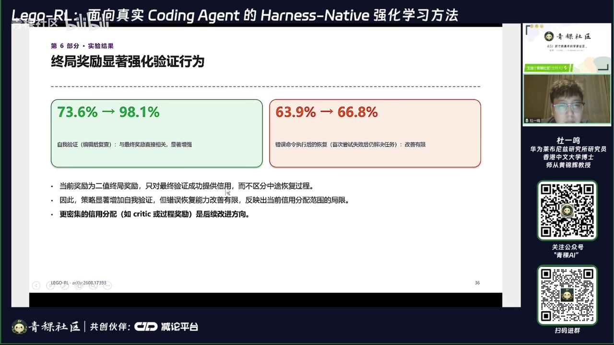

01｜Harness 是策略的一部分
模型从未直接“看到代码仓库”，它看到的是 Harness 选择、压缩、改写和序列化后的上下文。训练与部署 Harness 不一致，会把能力差异放大。
01:00–07:20 Harness 决定系统提示、工具 schema、执行逻辑、历史压缩、子 Agent、轮数与 token 预算。相同模型在 Claude Code、OpenHands 与 OpenCode 上可出现明显性能差异；报告给出的示例差距最高约 6.8 个点。


02｜三类失败：不忠实、不可靠、不可观测
很多 Agentic RL 失败不会报错，训练曲线甚至看似正常，但梯度、奖励或环境已经失真。
| 失败类型 | 典型来源 | 后果 |
|---|---|---|
| 不忠实优化 | 重写历史后重新 tokenize、MoE 路由不一致 | 训练概率与采样概率不对应，梯度方向失真 |
| 不可靠执行 | 翻查历史答案、联网作弊、安装/网络/IO/评测器故障 | 把作弊或基础设施失败当成能力信号 |
| 不可观测训练 | 只看总奖励与 KL | 无法定位具体任务、环境或轨迹在哪一步坏掉 |

03｜Native-Harness 架构
核心设计是把训练器与 Agent 循环解耦：原生 Harness 在隔离沙箱运行，模型通过统一 API 服务，推理边界直接捕获真实 token 与概率。
17:30–31:30 系统保留 Harness 原样，不把其逻辑重新实现进训练器。环境侧可用 Docker、Kubernetes 或云服务器；推理侧记录 token ID、response mask、log probability 与 MoE 专家路由；训练侧只使用当时真实生成的信息。


基础设施重点优化冷启动、镜像与仓库存储、并发调度和失败恢复。目标不是让系统图更复杂，而是减少珍贵 rollout 被网络与环境噪声浪费。
04｜可靠性与可观测性
可靠训练需要同时验证 token 对齐、奖励可信、环境健康和任务层面的学习趋势。


05｜结果、边界与下一步
原生 Harness 训练不仅提高基准分数，也改变解决问题的行为，例如编辑后主动复查。
51:00–57:40 报告在 Qwen3.5‑35B‑A3B、200K 上下文、SWE‑Bench Verified 设置下，对三种 Harness 分别训练。奖励与验证分数整体上升；编辑后重新读取/复查的比例从 73.6% 升至 98.1%。


未来方向包括混合 Harness、多语言、更稠密的过程奖励、上下文管理与有限窗口训练。报告也承认尚未对“原生运行”与“框架内重构 Agent 循环”做严格成本对照。
证据边界：本文忠实整理视频中的讲解、论文图表与演讲者判断，并非对论文复现实验或独立同行评审。自动转录中的专名已结合幻灯片校正；仍不确定的缩写和动态数字应以原论文或项目页面为准。